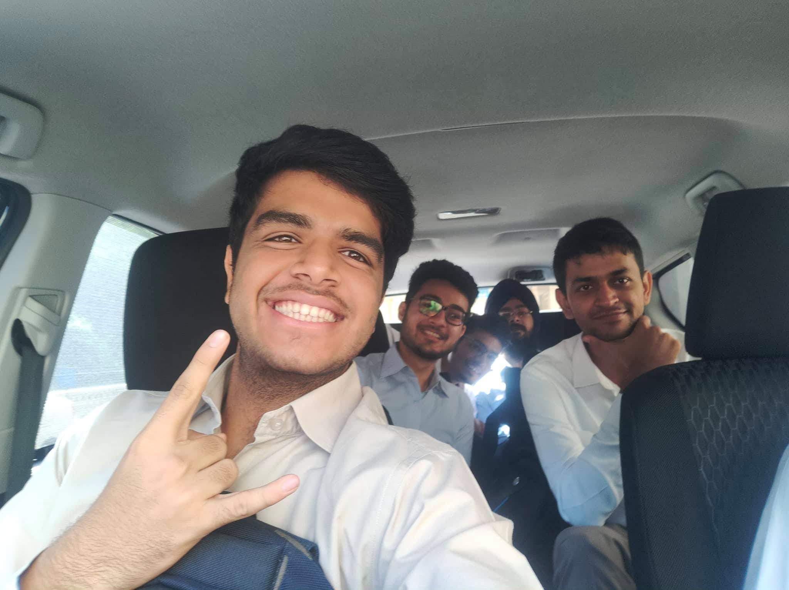
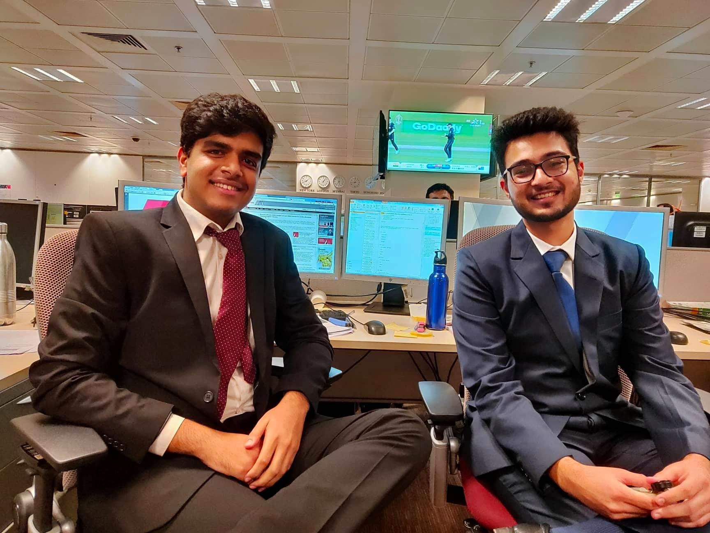

Ans: Hi! My name is Pallav Bhutani. I am a final year undergraduate student of the department of
Chemical Engineering (enrolled in its dual degree course :P). I had the chance to work in
Nomura's Global markets division during these summers. Global Markets is the 'trading side' of
Nomura. Powai office is integrated with various trading desks most importantly Asia except
Japan(AeJ) and Europe.
Q. What is the Selection Procedure?
Ans: It's a two day selection process. There's a GD for the shortlisted students on Day 0. The topics
are very basic, mine was on the lines of "What should corporates learn from the sport of
Cricket?". The screening is not very tough, although not to be taken lightly. Followed by the GD,
the shortlisted students are called for the interview rounds on Day 1. There are a couple of
rounds and sometimes an additional HR round.
The interviews are 'simple' but don't confuse it with 'easy'. It is an interviewee led interview, you
will have the chance to shape your interview the way you like. There are two interviews like this.
They might also ask a guesstimate in one of the rounds. So you have to know what a
guesstimate is beforehand. Major focus will be given to CV grilling, majorly on your past
internships and projects. There is an HR round at the end which consists of basic questions to
check whether the thought process of the candidate matches with that of the company.
Q. How to prepare for them?
Ans: For the group discussion, all you can do is form groups ideally a week before Day 1 and
practice them, take feedback from the group mates, work on it an practice again. Other
companies that have a GD are ITC & HUL. 
For the interviews, as already mentioned above, it a interviewee led interview. The interviewers
want to see your strong points and the understanding you have of the same. So if you try to
impress them by your background in finance, make sure you can answer any question they
throw at you (Not having a finance background helped in my case :P). They can pick up any
word you have mentioned in your CV and have a 10 min discussion on it. Be clear on why you
want to do finance and why Nomura is the perfect match for you.
For guesstimates, you can see a couple of videos on Youtube. No need to practice for weeks
but have an understanding of what it is.
Q. What were the Project Details?
Ans: Nomura's internship program is very well structured and a lot of importance is given to the
interns there (owing to the fact that they hire recent graduates only from this program). The 2
month internship is equally divided in two teams. The work might vary from team to team. There
is no single project, interns have the chance to work on multiple projects.
I had the privilege to work in 'Equity Linked Strategies' where my work was to make multiple
analysis tools related to find outliers in various equities, convertible bonds and options. One
model i made was related to delta hedging of convertible bonds and various strategies that can
be used for the same. One other project was related on portfolio screening and back testing.
Both the projects were in sync with the traders in HK/Europe.
In my next month, i worked in 'Asset Backed Securities' strategy team. One interesting fact
about the team is that it was Lehman Brothers' ABS team before Nomura (Watch Big Short if
you can't relate). My work in ABS was to construct a screening model to find outlier ABS deals
that have the possibility for rating upgradation/degradation.
Nomura also added a sideline competition for the interns which we took very seriously. The aim
was to invest 1Million USD in various indices (S&P 500, Shanghai Composite etc), safe havens,
crude oil etc and get the most returns at the en of the intern. As a matter of fact our final
presentation was 90% on this competition. We worked on this on weekends and absolutely
loved it.
Q. How was the Company culture?
Ans: Nomura is a Japanese bank and you can see the Japanese culture in the way work is carried
out. Nomura is a very respected investment bank that takes a lot of pride in their employees.
Nomura gives a lot of power to its employees, the learning curve is very steep. A lot of focus is
given to the interns. There will be multiple networking lunches and high teas with the leadership
team of Nomura which consists of all EDs and MDs. The exposure an intern at Nomura gets is
immense. The culture is to meet as many people as you can on the floor. You are considered as
an employee during your internship, i was on call with a trader. It will not be unusual to be on a
call with a client if your team does that.

Q. Who should ideally apply for the internship?
Ans: Anyone and everyone. It is a misconception that Nomura hires only CFAs/FRMs or for that
matter people with background in finance. I had absolutely no exposure in finance. I clearly
mentioned it in the interview. They understood and asked me on the work i have done in
campus. They do not need finance guys. They need smart people that can be given
responsibility. Finance you can learn, the person you are you cannot change.
Finance is no rocket science and internships are for learning, Nomura understands that. So
make use of this learning opportunity and start preparing for the process with grit.
Q. Any advice?
Ans: Be clear in what you want to do. The last thing an interviewer wants to see is a person in two
minds. Have a clear understanding of why you want to do finance if you don't have previous
experience in finance. Be confident in the work you have done in campus and know everything
about your past work experience. Be completely honest with the interviewers, no need to over
exaggerate at any point. But definitely, know about the happenings in the finance world like
US-China trade war, US- Iran tensions, Fed rate cuts etc, this will give added talking points.